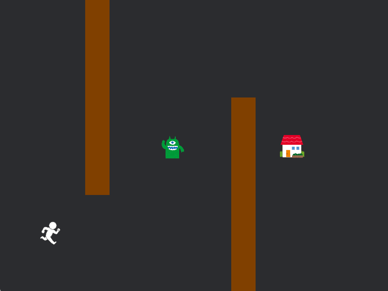
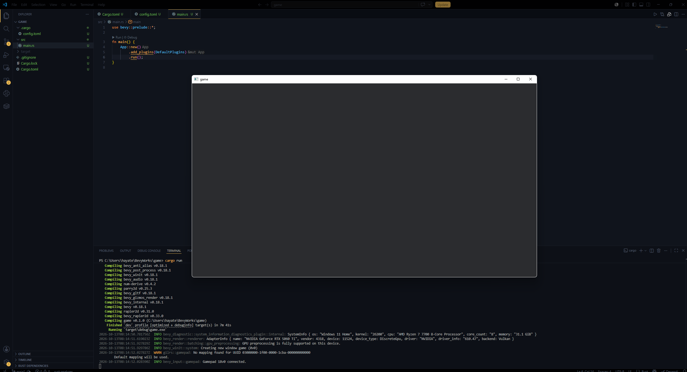

目次
はじめに
この資料について
この資料はGammaのBevy初心者向けBevy入門ガイドです。
「Bevyなんか一回も触ったことない」という初心者でも安心してBevyを始められるよう、基本的なところからUnityの使い方を解説し、簡単なゲームを作れるところまでリードしていきます。(Bevy公式ドキュメントhttps://bevy.org/)

↑こんな感じの帰宅ゲームを作っていきます！
まずは自分のパソコンの中にBevyの作品を入れるフォルダを作成し、そこに光の資料のGoogleドライブにあるzipファイルを展開します。
エクスプローラーを開き、PC＞ローカルディスク（C:）の中に「BevyWorks」フォルダを作成しましょう。（慣れている方はお好みでどうぞ。）
光の資料のドライブにある「bevy_sample_game.zip」を右クリック、「すべて展開」を選択し、参照ボタンから先ほど作成した「BevyWorks」フォルダを選択して.zipファイルを展開します。
環境構築
続いてゲーム作成に必要なRustの開発環境一式とプログラムを書くのに必要なテキストエディタであるVSCodeをダウンロード、インストールしていきます。
概要のみ記載しているので、Rustの公式ドキュメントを参考にしたり、VSCodeは既に入れている人に教えてもらいながら進めましょう。
rustupをインストールする
まずは、Rustの日本語公式ドキュメント(the book)に従って、Rustのバージョンと関連するツールを管理する「rustup」をインストールします。
軽く公式ドキュメントに書いてあることをまとめると、以下の手順でインストールできます。
- https://rust-lang.org/tools/install/に行き、DOWNLOAD RUSTUP-INIT.EXE(X64)をクリックしてダウンロードします。
- ダウンロードした「rustup-init.exe」を実行します。
- インストールの途中で、Visual StudioのC++ビルドツールをインストールするか聞かれるので、まだインストールしていない場合はインストールしてください。
- 「C++によるデスクトップ開発」(“Desktop Development with C++”)
- Windows 10または11のSDK
- 英語の言語パック(English language pack)コンポーネント
- インストールできたかを確認する
rustc --versionとcargo --versionをターミナルで実行し、バージョンが表示されればOKです。一応簡単にそれぞれ説明すると、rustcはRustのコンパイラ、cargoはRustのビルドツール兼パッケージマネージャーです。
VSCodeをインストールする
BevyではRustという言語でプログラムを書いていくことになります。
このガイドではVSCodeと呼ばれるテキストエディタ(テキストファイルを編集するソフト)を用いることとします。(任意のエディタを使っても構いません。なんならメモ帳でも(おすすめはしない))
公式サイト（https://code.visualstudio.com/download）にアクセスしてダウンロード、インストーラを起動して指示に従ってインストールします。基本的にデフォルトの設定で問題ないと思いますが、「PATHへの追加」の項目はONにしておきましょう。
VSCodeを起動し、拡張機能の検索欄に「rustanalyzer」と入力し、RustAnalyzerをインストールします。
次のページからゲーム制作が始まります。
途中で様々なエラーが表示されるかと思いますが、この資料のおまけページにガイドで出そうなエラー集のページを設けているので、そちらを参考にしてみたり、rustのコンパイラはエラーメッセージが非常に親切なので、ちゃんと読んでみると解決できることが多いです。また、rustc --explain <エラー番号>でエラーの詳細を確認できます。
とにかくわからないことがあれば筆者(かざね)にどしどし聞いてみてください！
GammaでBevyを使ってゲームを作り上げよう!
ゲームを作ってみよう!
まずは、はじめにでダウンロードしたサンプルゲームのディレクトリをテキストエディタで開いたり、ターミナルでビルド&実行してみましょう。
CLI(Command Line Interface)での操作に慣れていない人もいるかと思いますが、使えると便利ですし、この資料では簡単なコマンドしか使わないので、ぜひ覚えていきましょう。
# ディレクトリを開く
# ここでは、Cドライブの直下にBevyWorksというフォルダを作成し、その中にゲームのサンプルを展開したと仮定しています。
# ゲームのzipファイルを展開した場所は人によって違うと思うので、適宜読み替えてください。
cd BevyWorks/bevy_sample_game
# VSCodeで開く
code .
# ビルド&実行する
cargo run
一応説明しておくと、
cargo runは、Rustのビルドツール兼パッケージマネージャーであるCargoに「ビルドして実行してね」とお願いするコマンドです。 ビルドだけする場合はcargo buildを使います。 リリースビルドをする場合はcargo build --releaseのように--releaseとつけます。
矢印キーor WASDキーでキャラクターを動かすことができます。
試しに、プレイヤーの移動スピードや敵の移動スピードを変えてみましょう。
src/player/mod.rsの中にある
#![allow(unused)]
fn main() {
impl Default for Player {
fn default() -> Self {
// デフォルトの移動速度を設定
Self { speed: 200.0 }
}
}
}という箇所のspeedの値を変えると、プレイヤーの移動スピードが変わります。
似たような感じでenemyの移動スピードも変えられます。
src/enemy.rsの中にenemyのspeedの値を変える箇所があるので、探して変えてみましょう。
値を変えたら、再度cargo runでビルド&実行して、ゲーム内での挙動を確認してみましょう。
プロジェクトの作成
先ほどのサンプルゲームのようなものを実際に0から作っていきます！
まずは、プロジェクトを作成するために、ターミナルでBevyWorksディレクトリ(ディレクトリ名は人それぞれなので読み替えてください)にいる状態で以下のコマンドを実行します。
cargo new game
これを実行すると、BevyWorksディレクトリの中にgameという名前のディレクトリが作成され、その中にRustのプロジェクトの雛形が作成されます。
次に、作成したプロジェクトをVSCodeで開きます。
code ./game
開くと以下のようなディレクトリ構造になっていると思います。
game
├── Cargo.lock
├── Cargo.toml
├── target/
└── src/
└── main.rs
それぞれのフォルダの解説を軽くすると、Cargo.lockは依存関係のバージョンを固定するためのファイル(人間が直接いじることはほとんどない)、Cargo.tomlはプロジェクトの設定や依存関係を記述するファイル、target/はビルドした際に生成されるファイルが入るディレクトリ、src/はソースコードを置くディレクトリで、その中のmain.rsがエントリーポイントとなるRustのソースコードです。
あれ？呪文に聞こえるって？大丈夫です、慣れればすぐに理解できるようになります。
このままでもRustのプロジェクトとしてはビルド&実行できますが、Bevyを使うためにCargo.tomlに依存関係を追加していきます。
Cargo.tomlを開き、以下のように書き換えます。
[package]
name = "game"
version = "0.1.0"
edition = "2024"
[profile.dev]
opt-level = 1
[profile.dev.package."*"]
opt-level = 3
[features]
dynamic_linking = ["bevy/dynamic_linking"]
[dependencies]
bevy = "0.18.1"
bevy_rapier2d = "0.33"
serde = { version = "1.0", features = ["derive"] }
toml = "1.1"
anyhow = "1.0"
Bevyを使えるようにするために、[dependencies]のところにbevy = "0.18.1"を追加しました。
また、bevy_rapier2dは物理演算を行うためのライブラリで、serdeはデータのシリアライズ/デシリアライズを行うためのライブラリ、tomlはTOML形式のデータを扱うためのライブラリ、anyhowはエラー処理を簡単にするためのライブラリです。
クレート(crate)は、Rustコンパイラが一度に考慮する最小限のコードです。クレートは2種類の形態のうちいずれかです:バイナリクレートか、ライブラリクレートです。**バイナリクレート（binary crate）**は、 コマンドラインプログラムやサーバなどの実行可能形式にコンパイルされ、実行することができるプログラムです。**ライブラリクレート（library crate）**は、
main関数を持たず、実行可能形式へとコンパイルされません。代わりに、複数のプロジェクトで共有されることを想定した機能を定義するものです。「クレート」と言うときの、ほとんどの場合それはライブラリクレートのことであり、一般的なプログラミング概念の「ライブラリ」と同じ意味で使用します。
この辺はとりあえずそうしておけばいいと思ってれば[profile.dev]のopt-levelはビルドの最適化レベルを指定するもので、デフォルトでは1ですが、リリースビルドでは3に設定しています。
[profile.dev.package.“*”]のopt-levelは、すべての依存関係に対して最適化レベルを3に設定するためのものです。
[features]のdynamic_linkingはBevyの動的リンクを有効にするための設定です。
次に、.cargo/config.tomlを作成し、以下のように書きます。
[target.x86_64-pc-windows-msvc]
linker = "rust-lld.exe"
これで、プロジェクトの作成とBevyの依存関係の追加が完了しました。
次のステップでは、実際にゲームを作るためのコードを書いていきます。
ゲーム画面を表示する
現在の状態でcargo runでビルド&実行しても標準出力(ターミナル)にHello, world!と表示されるだけで、ゲーム画面は表示されません。
ゲーム画面を表示するためには、BevyのAppにDefaultPluginsを追加する必要があります。
src/main.rsを開き、以下のように書き換えます。
#![cfg_attr(not(debug_assertions), windows_subsystem = "windows")] // リリースビルドではコンソールを非表示にする
use bevy::prelude::*; // Bevyの基本機能一式(Unityでのusing UnityEngine;に相当する)
// エントリーポイント
fn main() {
App::new() // Bevyアプリケーションを作成
.add_plugins(DefaultPlugins) // デフォルトプラグインを追加。これでウィンドウが表示されるようになる
.run(); // アプリの起動
}
これでゲームのウィンドウが立ち上がるようになりました。
このページのこれから先は、ウィンドウの大きさやフルスクリーンにするかなどの設定ファイルを作成して、それを読み込むことで、ゲームのウィンドウの設定を変更していきます。少しめんどくさいので、最初はこのままでも構いません。
ウィンドウのサイズ等についての設定ファイルを作成する
まず、プロジェクトディレクトリ直下にsettings/settings.tomlというファイルを作成します。
中は以下のような形式で書きます
[window]
width = 800
height = 600
title = "Game"
fullscreen = false
vsync = true
設定ファイルをビルド時に実行ファイルと同じディレクトリにコピーする
次に、build.rsというファイルをプロジェクトディレクトリ直下に作成し、以下のように書きます。build.rsは、Cargoがビルドする際に自動的に実行されるスクリプトです。ここでは、settings/settings.tomlをビルド時に実行ファイルと同じディレクトリにコピーする処理を行います。
use std::fs;
use std::path::Path;
fn main() {
// 実行ファイルの出力先ディレクトリを取得
let out_dir = std::env::var("OUT_DIR").unwrap();
// target/debug or target/releaseに辿る
let target_dir = Path::new(&out_dir).ancestors().nth(3).unwrap();
// コピー先のパス
let dest = target_dir.join("settings/");
// コピー元のパス
let src = Path::new("settings/");
// 既存削除
if dest.exists() {
fs::remove_dir_all(&dest).unwrap();
}
// コピー
copy_dir_all(src, &dest).unwrap();
}
// 再帰コピー
fn copy_dir_all(src: impl AsRef<Path>, dst: impl AsRef<Path>) -> std::io::Result<()> {
fs::create_dir_all(&dst)?;
for entry in fs::read_dir(src)? {
let entry = entry?;
let ty = entry.file_type()?;
if ty.is_dir() {
copy_dir_all(entry.path(), dst.as_ref().join(entry.file_name()))?;
} else {
fs::copy(entry.path(), dst.as_ref().join(entry.file_name()))?;
}
}
Ok(())
}設定ファイルを読み込む
src/settings.rsというファイルを作って以下のように書きます。ここでは、設定の構造体の定義と、設定ファイルを読み込む関数を定義しています。
#![allow(unused)]
fn main() {
use bevy::prelude::*;
use serde::{Deserialize, Serialize};
// 設定を表す構造体
#[derive(Resource, Debug, Clone, Deserialize, Serialize)]
pub struct Settings {
pub window: WindowSettings,
}
// ウィンドウ設定を表す構造体
#[derive(Debug, Clone, Deserialize, Serialize)]
pub struct WindowSettings {
pub width: u32,
pub height: u32,
pub title: String,
pub fullscreen: bool,
pub vsync: bool,
}
// デフォルトの設定を提供するための実装
impl Default for Settings {
fn default() -> Self {
Self {
window: WindowSettings {
width: 800,
height: 600,
title: "Game".to_string(),
fullscreen: false,
vsync: true,
},
}
}
}
use std::fs;
use anyhow::Error;
// 設定をロードする関数
fn load_settings() -> Result<Settings, Error> {
let settings_str = fs::read_to_string("settings/settings.toml")?;
let settings: Settings = toml::from_str(&settings_str)?;
Ok(settings)
}
// 設定を取得する関数。ロードに失敗した場合はデフォルト設定を返す。
pub fn get_settings() -> Settings {
match load_settings() {
Ok(settings) => settings,
Err(err) => {
eprintln!("Failed to load settings: {err}");
Settings::default()
}
}
}
}また、src/main.rsを以下のように書き換えます。
#![cfg_attr(not(debug_assertions), windows_subsystem = "windows")] // リリースビルドではコンソールを非表示にする
use bevy::{prelude::*, window::WindowResolution};
mod settings; // 設定のモジュールをインポート
fn main() {
// settings/settings.tomlから設定を読み込む
let settings = settings::get_settings();
// Bevyアプリケーションを作成
let mut app = App::new();
// デフォルトプラグインを追加し、ウィンドウ設定を上書きする
app.add_plugins(DefaultPlugins.set(WindowPlugin {
primary_window: Some(Window {
title: settings.window.title.clone(),
resolution: WindowResolution::new(settings.window.width, settings.window.height),
mode: if settings.window.fullscreen {
bevy::window::WindowMode::BorderlessFullscreen(MonitorSelection::Primary)
} else {
bevy::window::WindowMode::Windowed
},
present_mode: if settings.window.vsync {
bevy::window::PresentMode::AutoVsync
} else {
bevy::window::PresentMode::AutoNoVsync
},
..default()
}),
..default()
}));
// 設定をリソースとしてアプリに挿入
app.insert_resource(settings);
// アプリの起動
app.run();
}これでsettings/settings.tomlの内容に応じて、ゲームのウィンドウのサイズやタイトル、フルスクリーンモード、VSyncの有効/無効を設定できるようになりました。
適当に数値を変えて、cargo runでビルド&実行してみましょう。
次はいよいよゲームの中身を作っていきます。
ゲーム全体の状態をStateで管理する
今回作るゲームでは大きく分けて、ゲームプレイ中, 終了(クリア or ゲームオーバー)の2つの状態が存在します。src/state.rsというファイルを作って以下のようにゲームの状態の定義をします。
#![allow(unused)]
fn main() {
use bevy::prelude::*;
// ゲームの状態を定義
#[derive(Debug, Default, Clone, Eq, PartialEq, Hash, Copy, States)]
pub enum GameState {
#[default]
Playing,
Ending,
}
}また、アプリケーションにこの状態を追加するために、src/main.rsを以下のように書き換えます。
#![cfg_attr(not(debug_assertions), windows_subsystem = "windows")] // リリースビルドではコンソールを非表示にする
use bevy::{prelude::*, window::WindowResolution};
mod settings;
mod state;
fn main() {
// settings/settings.tomlから設定を読み込む
let settings = settings::get_settings();
// Bevyアプリケーションを作成
let mut app = App::new();
// デフォルトプラグインを追加し、ウィンドウ設定を上書きする
app.add_plugins(DefaultPlugins.set(WindowPlugin {
primary_window: Some(Window {
title: settings.window.title.clone(),
resolution: WindowResolution::new(settings.window.width, settings.window.height),
mode: if settings.window.fullscreen {
bevy::window::WindowMode::BorderlessFullscreen(MonitorSelection::Primary)
} else {
bevy::window::WindowMode::Windowed
},
present_mode: if settings.window.vsync {
bevy::window::PresentMode::AutoVsync
} else {
bevy::window::PresentMode::AutoNoVsync
},
..default()
}),
..default()
}));
// 設定をリソースとしてアプリに挿入
app.insert_resource(settings);
app.init_state::<state::GameState>(); // ゲームの状態を追加
// アプリの起動
app.run();
}プレイヤーの移動と表示
まず、Updateの実行順序を制御するために、src/game_play_set.rsというファイルを作成し、以下のコードを追加します。
#![allow(unused)]
fn main() {
use bevy::prelude::*;
// 実行順を制御するためのシステムセットを定義
#[derive(SystemSet, Debug, Hash, PartialEq, Eq, Clone, Copy)]
pub enum GamePlaySet {
Input,
Detection,
Movement,
Rendering,
}
pub struct GamePlaySetPlugin;
impl Plugin for GamePlaySetPlugin {
fn build(&self, app: &mut App) {
app.configure_sets(
Update,
(
GamePlaySet::Input,
GamePlaySet::Detection.after(GamePlaySet::Input),
GamePlaySet::Movement.after(GamePlaySet::Detection),
GamePlaySet::Rendering.after(GamePlaySet::Movement),
)
.chain(),
);
}
}
}そしたら、src/player/mod.rsというファイルを作成し、PlayerについてのものをまとめるプラグインとPlayerコンポーネントとPlayerをスポーンするための関数を作成します。
#![allow(unused)]
fn main() {
use bevy::prelude::*;
use bevy_rapier2d::prelude::*;
pub struct PlayerPlugin;
impl Plugin for PlayerPlugin {
fn build(&self, app: &mut App) {
}
}
// プレイヤーのコンポーネント
// 移動速度を保持する
#[derive(Component)]
pub struct Player {
speed: f32,
}
// デフォルトトレイトを実装
impl Default for Player {
fn default() -> Self {
// デフォルトの移動速度を設定
Self { speed: 200.0 }
}
}
impl Player {
// プレイヤーをスポーンしてエンティティを返す関数
// エンティティはidとして返され、後で参照するために使用できる
pub fn spawn(commands: &mut Commands, position: Vec3, texture: Handle<Image>) -> Entity {
commands
.spawn((
// 速度を持つプレイヤーコンポーネントを追加
Player::default(),
// Transformコンポーネントを追加して位置を設定
Transform::from_translation(position),
// 長方形のコライダーを追加
Collider::cuboid(25.0, 25.0),
// 2D物理エンジンの剛体を追加
RigidBody::Dynamic,
// 重力の影響を受けないように設定
GravityScale(0.0),
// 回転をロックして、プレイヤーが回転しないように設定
LockedAxes::ROTATION_LOCKED,
// 衝突時のイベントを有効化
ActiveEvents::COLLISION_EVENTS,
// 速度を初期化
Velocity::default(),
// Continuous Collision Detectionを有効化
Ccd::enabled(),
// スプライトを追加して見た目を設定
Sprite {
image: texture.clone(),
custom_size: Some(Vec2::new(50.0, 50.0)),
..default()
},
))
.id()
}
}
}次にプレイヤーの入力を処理するシステムを作成します。src/player/input.rsというファイルを作成し、以下のコードを追加します。
#![allow(unused)]
fn main() {
use bevy::prelude::*;
// 入力情報を2次元ベクトルで表すリソース
#[derive(Resource, Debug, Clone, Copy, Default)]
pub struct MoveDirection(pub Vec2);
// 入力に応じてMoveDirectionを更新するシステム
pub fn set_move_direction(
keyboard_input: Res<ButtonInput<KeyCode>>,
key_config: Res<KeyConfig>,
mut move_direction: ResMut<MoveDirection>,
) {
let mut direction = Vec2::ZERO;
if key_config.up.pressed(&keyboard_input) {
direction.y += 1.0;
}
if key_config.down.pressed(&keyboard_input) {
direction.y -= 1.0;
}
if key_config.left.pressed(&keyboard_input) {
direction.x -= 1.0;
}
if key_config.right.pressed(&keyboard_input) {
direction.x += 1.0;
}
move_direction.0 = direction.normalize_or_zero();
}
// キーの組み合わせを表す構造体
// 複数キーの組み合わせをサポートするため、最大4つのキーを保持できるようにする
#[derive(Clone, Copy, Debug)]
pub struct KeyBinding {
keys: [Option<KeyCode>; KeyBinding::MAX_KEYS],
}
impl KeyBinding {
// 最大キー数を定義する定数
pub const MAX_KEYS: usize = 4;
// 新しいKeyBindingを作成するコンストラクタ
pub const fn new(keys: [Option<KeyCode>; KeyBinding::MAX_KEYS]) -> Self {
Self { keys }
}
// 今のフレームで押されているかどうかを判定する
pub fn pressed(&self, input: &ButtonInput<KeyCode>) -> bool {
self.keys.iter().flatten().any(|&key| input.pressed(key))
}
}
// プレイヤーの移動に使用するキー設定を保持するリソース
#[derive(Resource, Debug, Clone, Copy)]
pub struct KeyConfig {
pub up: KeyBinding,
pub down: KeyBinding,
pub left: KeyBinding,
pub right: KeyBinding,
}
// デフォルトのキーコンフィグ
impl Default for KeyConfig {
fn default() -> Self {
Self {
up: KeyBinding::new([Some(KeyCode::KeyW), Some(KeyCode::ArrowUp), None, None]),
down: KeyBinding::new([Some(KeyCode::KeyS), Some(KeyCode::ArrowDown), None, None]),
left: KeyBinding::new([Some(KeyCode::KeyA), Some(KeyCode::ArrowLeft), None, None]),
right: KeyBinding::new([Some(KeyCode::KeyD), Some(KeyCode::ArrowRight), None, None]),
}
}
}
}そしたら、この入力情報を使ってプレイヤーを動かすシステムを作成します。src/player/control.rsというファイルを作成し、以下のコードを追加します。
#![allow(unused)]
fn main() {
use super::*;
pub struct PlayerControlPlugin;
impl Plugin for PlayerControlPlugin {
fn build(&self, app: &mut App) {
app.add_systems(
FixedUpdate,
move_player.in_set(crate::game_play_set::GamePlaySet::Movement),
);
}
}
// プレイヤーの移動を制御するシステム
pub fn move_player(
move_direction: Res<input::MoveDirection>,
mut query: Query<(&mut Velocity, &Player)>,
) {
for (mut velocity, player) in &mut query {
// プレイヤーの速度を設定
velocity.linvel = move_direction.0 * player.speed;
}
}
}src/player/mod.rsのPlayerPluginにここまでのシステムやリソースを追加します。
#![allow(unused)]
fn main() {
mod control;
mod input;
impl Plugin for PlayerPlugin {
fn build(&self, app: &mut App) {
app.add_systems(
Update,
input::set_move_direction.in_set(crate::game_play_set::GamePlaySet::Input),
)
.init_resource::<input::MoveDirection>()
.init_resource::<input::KeyConfig>()
.add_plugins(control::PlayerControlPlugin);
}
}
}これでプレイヤーを動かす仕組みは完成しました。次はプレイヤーの見た目をつけれるようにします。src/textures/mod.rsというファイルを作成し、また、src/textures/player.pngという画像を用意します。src/textures/mod.rsには以下のコードを追加します。
#![allow(unused)]
fn main() {
use bevy::prelude::*;
// テクスチャのリソースを定義
#[derive(Resource)]
pub struct TextureHandles {
pub player_texture: Handle<Image>,
}
pub struct TexturePlugin;
impl Plugin for TexturePlugin {
fn build(&self, app: &mut App) {
// 埋め込みアセットを登録
bevy::asset::embedded_asset!(app, "player.png");
app.add_systems(Startup, load_textures);
}
}
fn load_textures(mut commands: Commands, asset_server: Res<AssetServer>) {
let player_texture_handle = asset_server.load("embedded://game/textures/player.png");
commands.insert_resource(TextureHandles {
player_texture: player_texture_handle,
});
}
}ではいよいよPlayerをゲーム上にスポーンさせます。PlayerはGameStateがPlayingになったときにスポーンさせます。src/playing.rsというファイルを作成し、以下のコードを追加します。
#![allow(unused)]
fn main() {
use crate::{player::Player, state::GameState};
use bevy::prelude::*;
pub struct PlayingPlugin;
impl Plugin for PlayingPlugin {
fn build(&self, app: &mut App) {
app.add_systems(OnEnter(GameState::Playing), setup);
}
}
// ゲームプレイ状態に入ったときに呼び出されるシステム
fn setup(
mut commands: Commands,
asset_server: Res<AssetServer>,
textures: Option<Res<crate::textures::TextureHandles>>,
cameras: Query<Entity, With<Camera2d>>,
) {
let player_texture = match textures {
Some(textures) => (
textures.player_texture.clone(),
),
None => (
asset_server.load("embedded://game/textures/player.png"),
),
};
// カメラが存在しない場合は新しくカメラをスポーンする
if cameras.is_empty() {
commands.spawn(Camera2d);
}
let player = Player::spawn(&mut commands, Vec3::new(-300.0, 0.0, 0.0), player_texture);
commands
.entity(player)
.insert(DespawnOnExit(GameState::Playing));
}
}あとは、src/main.rsに作ったプラグインとRapierPhysicsPluginを追加して、ゲームを実行してみましょう。(各モジュールをmodで宣言するのを忘れないようにしてください。また、bevy_rapier2d::prelude::*をuseするのも忘れないようにしてください。)
#![allow(unused)]
fn main() {
app.init_state::<state::GameState>()
.add_plugins(textures::TexturePlugin)
.add_plugins(RapierPhysicsPlugin::<NoUserData>::default())
.add_plugins(game_play_set::GamePlaySetPlugin)
.add_plugins(player::PlayerPlugin)
.add_plugins(playing::PlayingPlugin)
}家を配置、当たり判定を付けよう
プレイヤー同様に、ゴールの家も配置します。src/gaol.rsというファイルを作成し、以下のように書きます。
#![allow(unused)]
fn main() {
use bevy::prelude::*;
use bevy_rapier2d::prelude::*;
// ゴールのコンポーネント
// タグとして使うだけなので、フィールドは持たない
#[derive(Component)]
pub struct Goal;
impl Goal {
pub fn spawn(commands: &mut Commands, position: Vec3, texture: Handle<Image>) -> Entity {
commands
.spawn((
Goal,
Transform::from_translation(position),
// 物理的に動かないように固定する
RigidBody::Fixed,
Collider::cuboid(25.0, 25.0),
ActiveEvents::COLLISION_EVENTS,
Sprite {
image: texture.clone(),
color: Color::WHITE,
custom_size: Some(Vec2::new(50.0, 50.0)),
..default()
},
))
.id()
}
}
}src/texturers/gaol.pngという画像を用意して、ゴールの家の見た目として使います。また、プレイヤー同様にTextureHandlesリソースにゴールのテクスチャを追加します。
src/textures/mod.rsを以下のように書き換えます。
#![allow(unused)]
fn main() {
use bevy::prelude::*;
// テクスチャのリソースを定義
#[derive(Resource)]
pub struct TextureHandles {
pub player_texture: Handle<Image>,
pub goal_texture: Handle<Image>,
}
pub struct TexturePlugin;
impl Plugin for TexturePlugin {
fn build(&self, app: &mut App) {
// 埋め込みアセットを登録
bevy::asset::embedded_asset!(app, "player.png");
bevy::asset::embedded_asset!(app, "goal.png");
app.add_systems(Startup, load_textures);
}
}
fn load_textures(mut commands: Commands, asset_server: Res<AssetServer>) {
let player_texture_handle = asset_server.load("embedded://game/textures/player.png");
let goal_texture_handle = asset_server.load("embedded://game/textures/goal.png");
commands.insert_resource(TextureHandles {
player_texture: player_texture_handle,
goal_texture: goal_texture_handle,
});
}
}また、src/playing.rsのsetup関数内でゴールの家をスポーンさせます。
#![allow(unused)]
fn main() {
fn setup(
mut commands: Commands,
asset_server: Res<AssetServer>,
textures: Option<Res<crate::textures::TextureHandles>>,
cameras: Query<Entity, With<Camera2d>>,
) {
let (player_texture, goal_texture) = match textures {
Some(textures) => (
textures.player_texture.clone(),
textures.goal_texture.clone(),
),
None => (
asset_server.load("embedded://game/textures/player.png"),
asset_server.load("embedded://game/textures/goal.png"),
),
};
if cameras.is_empty() {
commands.spawn(Camera2d);
}
let player = Player::spawn(&mut commands, Vec3::new(-300.0, 0.0, 0.0), player_texture);
commands
.entity(player)
.insert(DespawnOnExit(GameState::Playing));
let goal = Goal::spawn(&mut commands, Vec3::new(200.0, 0.0, 0.0), goal_texture);
commands
.entity(goal)
.insert(DespawnOnExit(GameState::Playing));
}
}次にプレイヤーがゴールに触れたときの処理を追加します。src/player/collision.rsというファイルを作ってそこに以下のコードを書きます。
#![allow(unused)]
fn main() {
use super::*;
use crate::goal::Goal;
use bevy::ecs::query::{QueryData, QueryFilter};
use bevy_rapier2d::prelude::CollisionEvent;
pub struct PlayerCollisionPlugin;
impl Plugin for PlayerCollisionPlugin {
fn build(&self, app: &mut App) {
app.add_systems(
Update,
check_collisions.in_set(crate::game_play_set::GamePlaySet::Detection),
);
}
}
// ２つのエンティティのうち、指定されたクエリに一致する最初のエンティティを返す関数
fn find_entity<Q: QueryData, F: QueryFilter>(
first: Entity,
second: Entity,
query: &Query<Q, F>,
) -> Option<Entity> {
[first, second]
.into_iter()
.find(|entity| query.get(*entity).is_ok())
}
// プレイヤーとゴール、敵との衝突を検出するシステム
fn check_collisions(
players: Query<Entity, With<Player>>,
goals: Query<Entity, With<Goal>>,
mut collision_events: MessageReader<CollisionEvent>,
) {
for event in collision_events.read() {
// 衝突イベントが開始された場合のみ処理する
let CollisionEvent::Started(first, second, _) = event else {
continue;
};
// 衝突したエンティティのうち、プレイヤーに該当するエンティティを取得する
let Some(player_entity) = find_entity(*first, *second, &players) else {
continue;
};
// 衝突したエンティティのうち、ゴールまたは敵に該当するエンティティを取得する
if let Some(goal_entity) = find_entity(*first, *second, &goals) {
println!(
"Player {:?} collided with Goal {:?}",
player_entity, goal_entity
);
}
}
}
}PlayerCollisionPluginをPlayerPluginに追加します。
これでプレイヤーが家に触れた瞬間にコンソールにPlayer プレイヤーのid collided with Goal 家のidのように表示されるようになったと思います。
クリア画面を作る
まず、src/ending/mod.rsというファイルを作成し、ゲーム終了時に送信するメッセージの定義と、そのメッセージを処理するシステムを作ります。
#![allow(unused)]
fn main() {
use bevy::prelude::*;
use crate::state::GameState;
pub struct EndingPlugin;
// ゲーム終了メッセージを定義する列挙型
#[derive(Message, Copy, Clone, Debug)]
pub enum EndingMessage {
Clear,
GameOver,
}
// ゲーム終了状態を保持するリソース
#[derive(Resource, Debug, Clone, Default)]
pub struct EndingState {
pub message: Option<EndingMessage>,
}
impl EndingMessage {
// リザルト画面での背景色を返すメソッド
pub fn background_color(&self) -> Color {
match self {
EndingMessage::Clear => Color::srgb(0.0, 1.0, 0.0),
EndingMessage::GameOver => Color::srgb(1.0, 0.0, 0.0),
}
}
// リザルト画面でのテキストを返すメソッド
pub fn text(&self) -> &'static str {
match self {
EndingMessage::Clear => "Game Clear !!!!!!!!!!!!!!!!!!!!!!!!",
EndingMessage::GameOver => "Game Over !!!!!!!!!!!!!!!!!!!!!!!!",
}
}
}
impl Plugin for EndingPlugin {
fn build(&self, app: &mut App) {
app.add_message::<EndingMessage>()
.insert_resource(EndingState::default())
.add_systems(
Update,
handle_ending_message.in_set(crate::game_play_set::GamePlaySet::Detection),
);
}
}
// ゲーム終了メッセージを処理するシステム
fn handle_ending_message(
mut ending_message: MessageReader<EndingMessage>,
mut state: ResMut<NextState<GameState>>,
mut ending_state: ResMut<EndingState>,
) {
for message in ending_message.read() {
println!("Ending message received: {:?}", message);
// ゲーム終了状態を更新し、ゲーム状態をEndingに設定する
ending_state.message = Some(*message);
// GameStateをEndingに変更する
state.set(GameState::Ending);
}
}
}これで、ゲーム終了時に送信されるメッセージを処理し、ゲーム状態をEndingに変更するシステムが完成しました。
UIで使うためのフォントを読み込んでリソースに追加するシステムを作ります。src/fonts/mod.rsというファイルを作成し、以下のコードを追加します。
#![allow(unused)]
fn main() {
use bevy::prelude::*;
// フォントファイルのパス
pub const FONT_PATH: &str = "embedded://game/fonts/NotoSansJP-Bold.ttf";
// 日本語フォントのリソースを定義
#[derive(Resource)]
pub struct JpFont(pub Handle<Font>);
pub struct FontsPlugin;
impl Plugin for FontsPlugin {
fn build(&self, app: &mut App) {
// 埋め込みフォントを追加
bevy::asset::embedded_asset!(app, "NotoSansJP-Bold.ttf");
app.add_systems(Startup, setup_fonts);
}
}
// 日本語フォントをロードしてリソースとして登録するシステム
fn setup_fonts(mut commands: Commands, asset_server: Res<AssetServer>) {
// フォントをロード
let jp_font_handle = asset_server.load(FONT_PATH);
// フォントをリソースとして登録
commands.insert_resource(JpFont(jp_font_handle));
}
}UIを作成します。src/ending/ui.rsというファイルを作成し、ゲーム終了時のUIを表示するシステムを追加します。
#![allow(unused)]
fn main() {
use crate::{ending::EndingMessage, state::GameState};
use bevy::prelude::*;
// リスタートボタンのコンポーネント
#[derive(Component)]
pub struct RestartButton;
// ゲーム終了時のUIを表示するプラグイン
pub struct EndingUiPlugin;
impl Plugin for EndingUiPlugin {
fn build(&self, app: &mut App) {
app.add_systems(
Update,
restart_button_system.in_set(crate::game_play_set::GamePlaySet::Input),
)
.add_systems(OnEnter(GameState::Ending), spawn_ending_ui);
}
}
// リスタートボタンが押されたときにゲーム状態をPlayingに変更するシステム
fn restart_button_system(
mut button_query: Query<
(&Interaction, &mut BackgroundColor),
(With<RestartButton>, Changed<Interaction>),
>,
mut state: ResMut<NextState<GameState>>,
mut ending_state: ResMut<super::EndingState>,
) {
for (interaction, mut color) in &mut button_query {
// ボタンの状態に応じて色を変更する
match *interaction {
Interaction::Pressed => {
color.0 = Color::srgb(0.35, 0.75, 0.35);
println!("Restart button clicked!");
state.set(GameState::Playing);
ending_state.message = None;
}
Interaction::Hovered => {
color.0 = Color::srgb(0.25, 0.25, 0.25);
}
Interaction::None => {
color.0 = Color::srgb(0.15, 0.15, 0.15);
}
}
}
}
// ゲーム終了時のUIを生成するシステム
pub fn spawn_ending_ui(
mut commands: Commands,
jp_font: Res<crate::fonts::JpFont>,
ending_state: Res<super::EndingState>,
) {
let ending = match ending_state.message {
Some(message) => message,
None => {
println!("No ending message found, defaulting to GameOver");
EndingMessage::GameOver
}
};
let canvas = commands
.spawn((
Node {
width: percent(100.0),
height: percent(100.0),
align_items: AlignItems::Center,
justify_content: JustifyContent::Center,
flex_direction: FlexDirection::Column,
..default()
},
BackgroundColor(ending.background_color()),
DespawnOnExit(GameState::Ending),
))
.id();
let text = commands
.spawn((
Node {
max_width: percent(100.0),
..default()
},
Text::new(ending.text()),
TextFont {
font: jp_font.0.clone(),
font_size: 50.0,
..default()
},
TextLayout::new_with_justify(Justify::Center),
TextColor(Color::WHITE),
))
.id();
let restart_button = commands
.spawn((
Button,
RestartButton,
Node {
width: px(200.0),
height: px(50.0),
align_items: AlignItems::Center,
justify_content: JustifyContent::Center,
..default()
},
BackgroundColor(Color::default()),
children![
Node {
max_width: percent(100.0),
..default()
},
Text::new("Restart"),
TextFont {
font: jp_font.0.clone(),
font_size: 30.0,
..default()
},
TextLayout::new_with_justify(Justify::Center),
TextColor(Color::WHITE),
],
))
.id();
// canvasの子としてtextとrestart_buttonを追加
commands
.entity(canvas)
.add_children(&[text, restart_button]);
}
}作ったプラグインを追加していきます。src/ending/mod.rsに以下のコードを追加します。
#![allow(unused)]
fn main() {
mod ui;
}#![allow(unused)]
fn main() {
impl Plugin for EndingPlugin {
fn build(&self, app: &mut App) {
app.add_message::<EndingMessage>()
.insert_resource(EndingState::default())
.add_plugins(ui::EndingUiPlugin) // UIプラグインを追加
.add_systems(
Update,
handle_ending_message.in_set(crate::game_play_set::GamePlaySet::Detection),
);
}
}
}src/main.rsに作ったプラグインを追加します。add_plugins(fonts::FontsPlugin)とadd_plugins(ending::EndingPlugin)をappに追加してください。
src/player/collision.rsのcheck_collisionsシステムを書き換えて、プレイヤーがゴールに触れたときにゲームクリアのメッセージを送信するようにします。
#![allow(unused)]
fn main() {
// プレイヤーとゴール、敵との衝突を検出するシステム
fn check_collisions(
players: Query<Entity, With<Player>>,
goals: Query<Entity, With<Goal>>,
mut collision_events: MessageReader<CollisionEvent>,
mut ending_message: MessageWriter<EndingMessage>, // ゲーム終了メッセージを送信するためのMessageWriter
) {
for event in collision_events.read() {
// 衝突イベントが開始された場合のみ処理する
let CollisionEvent::Started(first, second, _) = event else {
continue;
};
// 衝突したエンティティのうち、プレイヤーに該当するエンティティを取得する
let Some(player_entity) = find_entity(*first, *second, &players) else {
continue;
};
// 衝突したエンティティのうち、ゴールまたは敵に該当するエンティティを取得する
if let Some(goal_entity) = find_entity(*first, *second, &goals) {
println!(
"Player {:?} collided with Goal {:?}",
player_entity, goal_entity
);
// ゲームクリアのメッセージを送信する
ending_message.write(EndingMessage::Clear);
}
}
}
}